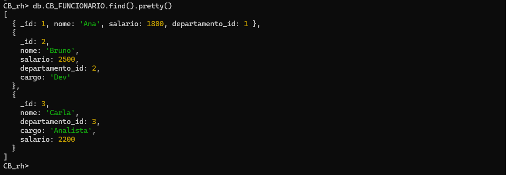
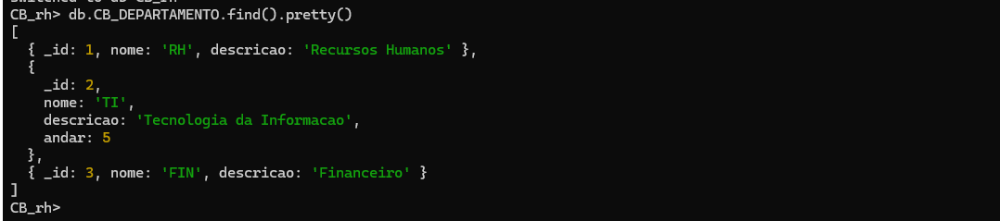
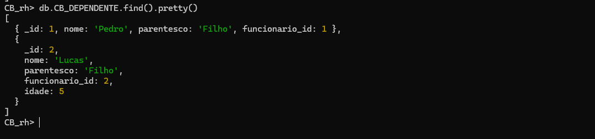
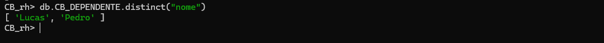
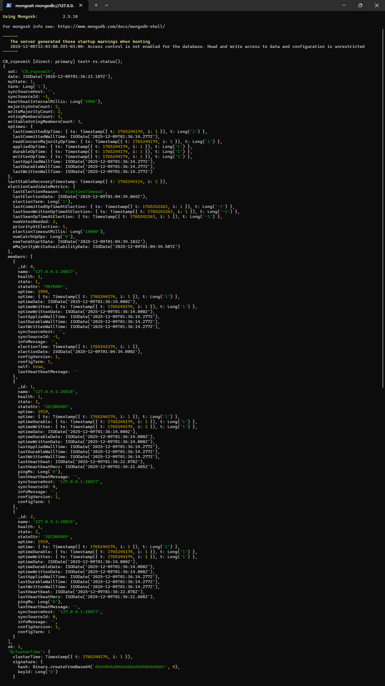
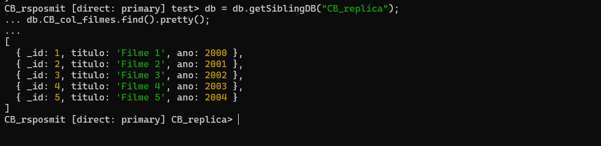
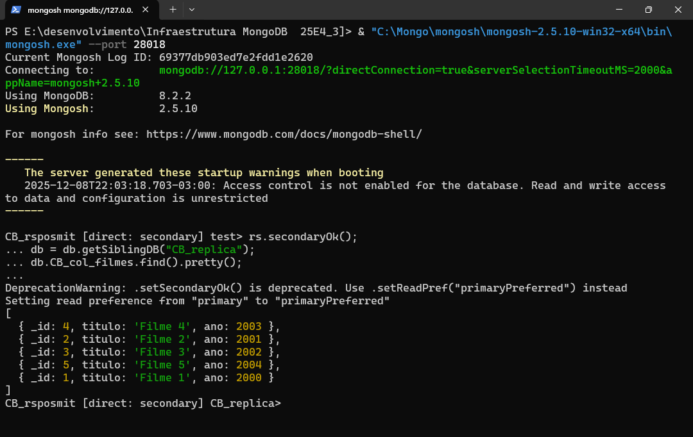
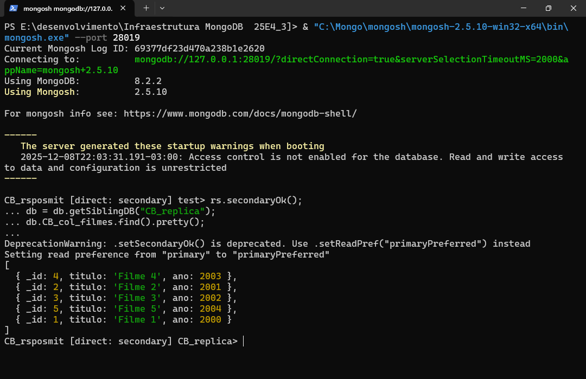
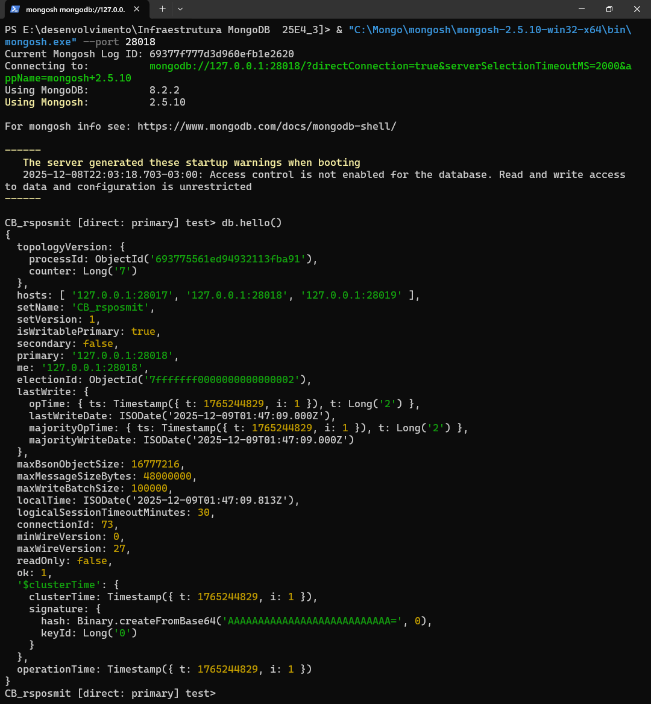

0. Objetivo do trabalho
Este trabalho tem como propósito aplicar, em ambiente controlado, os principais conceitos abordados na disciplina de Infraestrutura MongoDB. Para isso, são desenvolvidas atividades que contemplam tanto a discussão conceitual sobre bancos de dados SQL e NoSQL quanto a implementação prática de recursos fundamentais do MongoDB.
De forma sintetizada, o trabalho procura:
- Comparar características de bases relacionais (SQL) e não relacionais (NoSQL);
- Construir bases de dados e collections com operações de CRUD em MongoDB;
- Explorar modelagem de dados em documentos, com relacionamentos 1-N e N-N;
- Configurar e validar um Replica Set para fins de alta disponibilidade e tolerância a falhas;
- Registrar evidências das execuções por meio de scripts e capturas de tela.
1. Ambiente e Ferramentas
As atividades foram realizadas em ambiente local, com a seguinte configuração:
- Sistema Operacional: Microsoft Windows Workstation (build 26200);
- MongoDB Server: versão 8.2.2 (64-bit);
- Shell:
mongosh, versão 2.5.10; - Editor de código: Visual Studio Code;
- Diretório base do projeto:
E:\desenvolvimento\Infraestrutura MongoDB 25E4_3.
1.1 Estrutura de pastas do projeto
E:.
│ infraestrutura_mongodb.html
│
├───assets
│ db.CB_col_filmes.primary.png
│ db.CB_DEPARTAMENTO.find().pretty().png
│ db.CB_DEPARTAMENTO.find(descricao_Tecnologia da Informacao).pretty().png
│ db.CB_DEPENDENTE.distinct(nome).png
│ db.CB_DEPENDENTE.find().pretty().png
│ db.CB_DEPENDENTE.find().pretty()_2.png
│ db.CB_FUNCIONARIO.find( _id 3 ).pretty().png
│ db.CB_FUNCIONARIO.find().pretty().png
│ db.CB_FUNCIONARIO.find({ salario { $gt 2000 } }).pretty().png
│ replica_failover_novo_primary.png
│ replica_find_secondary_28018.png
│ replica_find_secondary_28019.png
│ replica_status_inicial.png
│ rs_secondary_28018_cb_filmes.png
│
└───scripts
01_cb_rh.mongo
02_cb_modelo.mongo
03_cb_indeagreg.mongo
As imagens armazenadas em assets são utilizadas como evidências das operações executadas
no ambiente MongoDB.
2. Parte 1 – Conceitos (SQL x NoSQL)
2.1 Diferenças entre bases SQL e NoSQL
-
Modelo de dados:
Bancos SQL adotam o modelo relacional, baseado em tabelas, linhas, colunas e relacionamentos bem definidos por chaves primárias e estrangeiras. Bancos NoSQL, por sua vez, utilizam modelos mais flexíveis, como documentos JSON/BSON, chave–valor, colunas largas ou grafos. -
Esquema:
Em bancos relacionais, o esquema costuma ser rígido, definido previamente por DDL, o que demanda planejamento detalhado antes da carga de dados. Em bases NoSQL, o esquema tende a ser flexível ou até mesmo schema-less, permitindo que documentos de uma mesma coleção possuam campos diferentes e evoluam ao longo do tempo. -
Escalabilidade:
Bancos SQL tradicionalmente priorizam escalabilidade vertical (aumento de recursos em um único servidor). Já muitas soluções NoSQL foram projetadas desde a origem para escalabilidade horizontal, por meio de particionamento (sharding) e distribuição dos dados entre vários nós.
2.2 Semelhanças entre bases SQL e NoSQL
- Ambos os modelos têm como finalidade principal o armazenamento persistente de dados e suportam operações de inserção, consulta, atualização e remoção.
- Tanto em bancos relacionais quanto em não relacionais é possível estabelecer regras de integridade e consistência, ainda que por mecanismos distintos (constraints e chaves em SQL; validações, tipos e regras de aplicação em NoSQL).
- Os dois tipos podem operar em ambientes distribuídos e de alta disponibilidade, com recursos de replicação e recuperação em caso de falha.
2.3 NoSQL é melhor ou pior que SQL?
A comparação entre SQL e NoSQL não deve ser feita em termos absolutos de “melhor” ou “pior”, mas sim considerando o contexto de uso. Em geral, bancos SQL se destacam quando:
- há necessidade de fortes garantias ACID e transações complexas;
- são exigidos relatórios estruturados com muitas junções e agregações;
- os dados são altamente estruturados e seguem regras rígidas de normalização.
Os bancos NoSQL tendem a se sobressair em cenários em que:
- o volume de dados é muito grande e a estrutura tende a variar ao longo do tempo;
- é desejável escalar horizontalmente, distribuindo dados por múltiplos servidores;
- o modelo de dados precisa refletir de forma direta as estruturas utilizadas pela aplicação, como documentos aninhados em MongoDB.
2.4 Cenários para escolha SQL x NoSQL
Como exemplo de cenário adequado para SQL, pode-se citar um sistema financeiro que trate de operações de crédito e débito, no qual a consistência forte, o controle transacional e a rastreabilidade são requisitos indispensáveis. Nesse caso, um banco relacional transacional é mais apropriado.
Já um cenário típico para NoSQL é o de uma aplicação web ou mobile com grande volume de acessos e dados semi-estruturados, como um catálogo de produtos com atributos diferentes por categoria. Nessa situação, um banco orientado a documentos, como o MongoDB, permite flexibilidade de esquema e escalabilidade horizontal com menor impacto na aplicação.
2.5 Tipos de bases NoSQL e características
- Chave–valor: armazenam pares simples chave → valor, normalmente em memória e com acesso muito rápido. São usados em cenários como armazenamento de sessões, caches distribuídos e contadores.
- Documentos: utilizam documentos em estruturas semelhantes a JSON (ou BSON), como no caso do MongoDB. Permitem representar objetos da aplicação de maneira natural, com campos aninhados e listas.
- Colunas largas: organizam dados em famílias de colunas, otimizando consultas orientadas a leitura por chave de partição. São aplicáveis, por exemplo, a grandes volumes de dados de log ou séries temporais.
- Grafos: são especializados em armazenar relações entre entidades, oferecendo consultas eficientes sobre caminhos, vizinhanças e padrões de conexão. São úteis em redes sociais, recomendações e detecção de fraude.
- Séries temporais: focam em dados indexados por tempo, com recursos específicos para agregações por janelas temporais, o que facilita o trabalho com métricas, telemetria e monitoramento.
Referências utilizadas: documentação oficial do MongoDB e material introdutório de bases de dados NoSQL disponíveis em repositórios técnicos e documentação de produtos de mercado.
3. Parte 2 – Prática: Database CB_rh (operações de CRUD)
Na primeira etapa prática, foi criado o database CB_rh, contemplando as collections
CB_DEPARTAMENTO, CB_FUNCIONARIO e CB_DEPENDENTE. Nelas foram
executadas operações de inserção de documentos, consultas, filtros, uso de
distinct, atualização e remoção, em conformidade com os itens A4 a A9 do enunciado.
3.1 Conteúdo das coleções

CB_FUNCIONARIO.
CB_DEPARTAMENTO.
CB_DEPENDENTE.3.2 Filtros e operações específicas
.pretty().png)
CB_DEPARTAMENTO (igualdade)..pretty().png)
CB_FUNCIONARIO.
distinct("nome") em CB_DEPENDENTE.
Outros registros presentes na pasta assets, como
db.CB_DEPENDENTE.find().pretty()_2.png e
db.CB_FUNCIONARIO.find( _id 3 ).pretty().png, ilustram o efeito das operações de
atualização e remoção, demonstrando a alteração do conteúdo das coleções após tais comandos.
4. Parte 2 – Prática: Replicação (Replica Set CB_rsposmit)
4.1 Criação das pastas de dados
Para possibilitar a configuração de um Replica Set, foram definidos diretórios distintos para
armazenar os dados de cada instância do servidor mongod, conforme segue:
Remove-Item "C:\mongo_rs" -Recurse -Force -ErrorAction SilentlyContinue
New-Item -ItemType Directory -Path `
"C:\Users\barro\mongo_rs\rs1", `
"C:\Users\barro\mongo_rs\rs2", `
"C:\Users\barro\mongo_rs\rs3", `
"C:\Users\barro\mongo_rs\arb" -Force
4.2 Inicialização dos processos mongod
Em seguida, foram iniciadas três instâncias do servidor MongoDB, todas pertencentes ao Replica Set
CB_rsposmit, diferenciadas pelas portas e pelos diretórios de dados associados:
"C:\Program Files\MongoDB\Server\8.2\bin\mongod.exe" --replSet CB_rsposmit --port 28017 --dbpath "C:\Users\barro\mongo_rs\rs1" --bind_ip 127.0.0.1
"C:\Program Files\MongoDB\Server\8.2\bin\mongod.exe" --replSet CB_rsposmit --port 28018 --dbpath "C:\Users\barro\mongo_rs\rs2" --bind_ip 127.0.0.1
"C:\Program Files\MongoDB\Server\8.2\bin\mongod.exe" --replSet CB_rsposmit --port 28019 --dbpath "C:\Users\barro\mongo_rs\rs3" --bind_ip 127.0.0.1
4.3 Inicialização e configuração do Replica Set
A configuração do Replica Set foi realizada a partir da instância em 28017, utilizando o
shell mongosh:
& "C:\Mongo\mongosh\mongosh-2.5.10-win32-x64\bin\mongosh.exe" --port 28017
Definição da configuração e efetiva inicialização:
cfg = {
_id: "CB_rsposmit",
members: [
{ _id: 0, host: "127.0.0.1:28017" },
{ _id: 1, host: "127.0.0.1:28018" },
{ _id: 2, host: "127.0.0.1:28019" }
]
};
rs.initiate(cfg);
Após esse procedimento, o comando rs.status() confirmou a topologia do Replica Set, com
a instância em 127.0.0.1:28017 atuando como PRIMARY e as instâncias em
127.0.0.1:28018 e 127.0.0.1:28019 como SECONDARY.

CB_rsposmit via rs.status().
Foi realizada ainda uma tentativa de inclusão de um árbitro com
rs.addArb("127.0.0.1:28020"). Contudo, a operação foi rejeitada pela versão 8.2 do
MongoDB por implicar alteração no write concern implícito. Diante disso, optou-se por
manter a topologia composta por três nós de dados, sem o uso de árbitro.
5. Testes de replicação
5.1 Inserção de dados no PRIMARY
Para validar a replicação, foi criado o database CB_replica e, dentro dele, a collection
CB_col_filmes, com cinco documentos representando filmes. As operações a seguir foram
executadas no nó PRIMARY (porta 28017):
db = db.getSiblingDB("CB_replica");
db.createCollection("CB_col_filmes");
db.CB_col_filmes.insertMany([
{ _id: 1, titulo: "Filme 1", ano: 2000 },
{ _id: 2, titulo: "Filme 2", ano: 2001 },
{ _id: 3, titulo: "Filme 3", ano: 2002 },
{ _id: 4, titulo: "Filme 4", ano: 2003 },
{ _id: 5, titulo: "Filme 5", ano: 2004 }
]);
db.CB_col_filmes.find().pretty();

CB_col_filmes no PRIMARY.5.2 Leitura em SECONDARY (porta 28018)
Na sequência, foi realizada leitura em um dos nós secundários, permitindo acesso em modo leitura
com rs.secondaryOk():
& "C:\Mongo\mongosh\mongosh-2.5.10-win32-x64\bin\mongosh.exe" --port 28018
rs.secondaryOk();
db = db.getSiblingDB("CB_replica");
db.CB_col_filmes.find().pretty();

CB_col_filmes no SECONDARY 127.0.0.1:28018.5.3 Leitura em SECONDARY (porta 28019)
Procedimento análogo foi adotado para o segundo nó secundário:
& "C:\Mongo\mongosh\mongosh-2.5.10-win32-x64\bin\mongosh.exe" --port 28019
rs.secondaryOk();
db = db.getSiblingDB("CB_replica");
db.CB_col_filmes.find().pretty();

CB_col_filmes no SECONDARY 127.0.0.1:28019.Em ambos os nós secundários, foram retornados os mesmos cinco documentos inseridos originalmente no PRIMARY, o que comprova o funcionamento da replicação no Replica Set configurado.
6. Teste de failover (eleição de novo PRIMARY)
6.1 Desligamento do PRIMARY
Para avaliar o comportamento de failover, o processo associado ao nó PRIMARY (porta 28017) foi
identificado por meio do comando netstat e encerrado com Stop-Process,
simulando a falha do servidor:
netstat -ano | findstr 28017
Stop-Process -Id <PID_DO_PRIMARY> -Force
6.2 Verificação do novo PRIMARY
Após alguns instantes, foi estabelecida nova conexão com um dos nós remanescentes (por exemplo,
porta 28018), e o estado do Replica Set foi verificado novamente com rs.status(),
observando qual instância havia assumido o papel de PRIMARY.

O resultado confirmou a eleição automática de um dos nós secundários como novo PRIMARY, evidenciando a capacidade do Replica Set de manter a disponibilidade do banco de dados mesmo diante da perda temporária de um de seus membros.
7. Considerações sobre arbiter e write concern
Foi realizado um experimento adicional com o objetivo de incluir um árbitro na configuração do Replica Set, por meio do comando:
rs.addArb("127.0.0.1:28020");
A operação, entretanto, foi rejeitada com a mensagem:
NewReplicaSetConfigurationIncompatible:
Reconfig attempted to install a config that would change the implicit default write concern.
Use the setDefaultRWConcern command to set a cluster-wide write concern and try the reconfig again.
Esse comportamento reflete uma postura mais restritiva das versões recentes do MongoDB em relação a mudanças de topologia que impactem o write concern implícito. Considerando tratar-se de um ambiente de laboratório, optou-se por prosseguir com uma configuração composta por três nós de dados (um PRIMARY e dois SECONDARYs), sem árbitro, o que também atende às recomendações modernas de uso, quando há disponibilidade de nós suficientes para votação.
8. Conclusão
O desenvolvimento deste trabalho permitiu consolidar, de forma prática, os conceitos discutidos em sala de aula sobre bancos de dados NoSQL, com foco em MongoDB. Foram revisadas as diferenças e semelhanças em relação a bancos relacionais, analisados cenários de aplicação adequados para cada modelo e apresentados os principais tipos de bancos NoSQL em uso no mercado.
No âmbito prático, foram criados databases e collections, executadas operações de CRUD com filtros
específicos, utilizado o recurso de distinct e registradas as alterações por meio de
evidências em tela. Em seguida, foi configurado um Replica Set com três nós, realizada a inserção
de dados em um nó PRIMARY, verificada a replicação para os nós SECONDARY e conduzido um teste de
failover com eleição automática de um novo PRIMARY.
De maneira geral, as atividades demonstram como o MongoDB pode ser configurado para operar em ambientes com requisitos de disponibilidade e resiliência, ao mesmo tempo em que oferece flexibilidade de modelagem de dados. O conjunto de scripts e imagens anexados complementa o relatório textual e documenta as principais etapas de configuração e validação executadas ao longo do trabalho.